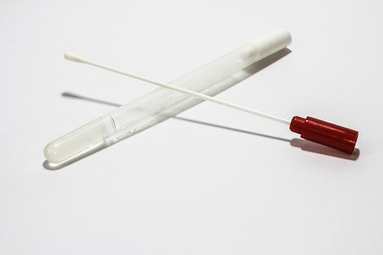

La nutrigénétique
- Aperçu
- En pratique
- Le rapport génétique
Une nutrition personnalisée doit être basée sur le principe que les aliments ou les nutriments peuvent être un facteur de risque ou de protection pour prévenir et traiter diverses maladies, en fonction de la prédisposition génétique de l'individu (nutrigénétique) et sur leur capacité à réguler l'expression des gènes (nutrigénomique).
L'implémentation de la nutrition personnalisée dépend donc des informations génétiques de base (par exemple, le patrimoine et les marqueurs épigénétiques), conditions biologiques / médicales (antécédents de maladies, intolérances ou allergies, considérations familiales, etc.), problèmes environnementaux (activité physique et habitudes alimentaires) et diversité culturelle (p. ex. préférences alimentaires, religion et accessibilité à la nourriture ) affectant l'individu.
Les caractéristiques biologiques des organismes vivants sont codées dans les génomes. Le génome est le matériel héréditaire qui est transmis des parents à la progéniture et qui confère l'identité biologique d'un individu. Il est composé de grosses molécules d'acides nucléiques (comme les acides désoxyribonucléiques, l'ADN) constituées de quatre monomères différents (adénine, guanine, cytosine et thymine).
La séquence de ces monomères contient les instructions pour construire d'autres molécules fonctionnelles telles que les acides ribonucléiques (ARN) ou les protéines. Le segment de l'acide nucléique qui contient les instructions pour l'une de ces molécules est un gène. Par conséquent, un gène code pour une molécule fonctionnelle et est considéré comme l'unité moléculaire de l'hérédité.
L'obésité est une maladie à haute fréquence avec une étiologie multifactorielle impliquant de multiples interactions complexes entre la génétique et l'environnement. La prévalence accrue du surpoids et de l'obésité est le résultat des changements survenus dans les sociétés modernes (urbanisation accrue; augmentation rapide des aliments disponibles, bon marché et riches en calories; et modes de vie sédentaires) qui ont un impact particulier sur les sujets génétiquement sensibles.
Il existe des preuves considérables suggérant qu'il existe des différences individuelles dans la réponse à l'entraînement physique (càd l'aptitude à l'entraînement), même lorsque les sujets sont exposés au même régime d'exercice standardisé. Les facteurs génétiques jouent un rôle dans l'explication de ces différences.
Les boissons contenant de la caféine, telles que le café, le thé et le cola, sont très populaires. En particulier, le café, après l'eau, est probablement la boisson la plus utilisée dans le monde. On suppose que les boissons contenant de la caféine soulagent ou préviennent la somnolence et améliorent les performances.
Les preuves globales actuellement disponibles sur les effets cardiovasculaires liés à la consommation habituelle de café sont largement rassurantes. De plus, le café semble avoir un effet protecteur contre les cancers et les maladies neurodégénératives. De nombreux avantages du café découlent probablement de sa teneur en caféine, bien que d'autres substances puissent jouer un rôle important dans la protection de la santé. Cependant, l es différences génétiques interindividuelles dans le métabolisme de la caféine ou les effecteurs de la caféine, tels que l'adénosine ou les récepteurs adrénergiques, sont probablement responsables de différentes réactions à la consommation de caféine. Les interactions nutrigénétiques peuvent exposer certaines personnes génétiquement prédisposées à un risque plus élevé de maladies cardiovasculaires lié au café. Pour toutes ces raisons, la vieille mise en garde des médecins de s'abstenir de boire du café n'est pas justifiée tant pour les sujets sains que pour les patients atteints de maladies cardiovasculaires. Cependant, il faut faire preuve de prudence pour les personnes vulnérables, notamment en tenant compte de la variabilité interindividuelle en réponse à l'apport en caféine.
D'autres pathologies comme le diabète, le cancer et tant d'autre présentent souvent des prédispositions génétiques. Les métabolismes des glucides, des graisses, des protéines, des minéraux et l'alcool sont également déterminés génétiquement.
En quoi consiste les conseils diététiques basé sur les gènes (NUTRITION DE PRÉCISION)?
Les directives nutritionnelles de santé publique impliquant les apports de référence et les apports alimentaires recommandés sont des besoins nutritionnels estimés, des personnes sans maladie connue. Ces normes visent à répondre aux besoins nutritionnels de la plupart des membres d'une communauté et à prévenir les dommages liés à la nutrition tels que l'obésité, le diabète et les maladies cardiovasculaires. Il est important de reconnaître que les apports de référence ne sont pas destinés à prendre en charge les patients souffrant de troubles métaboliques ou d'autres maladies. En fait, il serait nocif pour les porteurs de nombreuses dispositions héréditaires, telles que la phénylcétonurie, les anomalies du cycle de l'urée, l'hémochromatose et la maladie cœliaque, de suivre toutes les recommandations pour des populations saines. Les personnes présentant des variantes génétiques communes supplémentaires ne sont pas non plus bien servies par les recommandations car certaines sont connues pour provoquer une vulnérabilité accrue à certains aliments ou nutriments et d'autres nécessitent un apport plus élevé pour prévenir les maladies de manière optimale. Par exemple, les deux tiers de la population mondiale ne tolèrent pas bien une consommation élevée d'aliments riches en lactose comme le lait. Un autre exemple est celui des nombreuses femmes qui, en raison de leur disposition génétique, ont besoin d'un apport beaucoup plus élevé en acide folique que la plupart des autres pour éviter un risque accru d'avoir des enfants atteints de malformations congénitales.
Le succès de la nutrition de précision dépendra probablement de la capacité à intégrer plusieurs facteurs, tels que des informations sur le génome, l’épigénome et le microbiome de l’individu, et d’autres sources de données «omiques».
Idéalement, nous devrions utiliser autant d'informations que possible pour déterminer ce qu'un individu devrait manger et boire. Pour calculer une estimation raisonnable des besoins énergétiques, au minimum, nous devons tenir compte du sexe, de l'âge, de la taille, du poids et de l'activité physique. En pratique, nous avons tendance à évaluer la taille corporelle et à constater que les personnes en surpoids consomment trop de calories, quel que soit ce nombre, et de même avec une insuffisance pondérale évidente. Ce n'est pas si facile pour les minéraux, les micronutriments et les bioactifs. Nous ne pouvons pas regarder les clients et conclure que leur apport en acide folique est trop faible. Bien entendu, nous nous interrogerons sur leur consommation des principales sources de acide folique (légumes vert foncé, oranges et légumineuses) ou même procéderons à une évaluation complète. Cependant, nous ne saurons toujours pas de quelle quantité de ces aliments riches en folates ils ont besoin. La disponibilité du génotypage peut surmonter cette difficulté. Une caractéristique intéressante de l'information génétique est qu'elle ne change pas et une seule analyse dure toute une vie (bien sûr, cela signifie également que ces informations potentiellement sensibles doivent être soigneusement gardées pendant une durée tout aussi longue).
L'élaboration d'objectifs alimentaires devrait être conçue de manière plus large. Le professionnel de la nutrition doit décider de ce qui correspond le mieux aux besoins alimentaires de l'individu: quel type de régime alimentaire (méditerranéen, végétalien, etc.), quels groupes d'aliments inclure ou exclure (plus de légumes vert foncé, aliments sans gluten, évitement du porc , etc.), l'équilibre des macronutriments (faible teneur en glucides, hypocalorique, etc.), les quantités individuelles de nutriments, une gamme de bioactifs (acide docosahexaénoïque, acide eicosapentaénoïque, lycopène, flavonoïdes, etc.), ainsi que des compléments alimentaires si nécessaire. L'information génétique peut aider à fixer des objectifs dans tous ces groupes. Le défi final est alors le conseil proprement dit. Cela devrait inclure des conseils généraux sur les comportements (limiter les collations, prendre le petit-déjeuner, éviter les repas de fin de soirée) et des directives générales (manger plus de légumes, éviter les aliments salés, limiter l'apport en graisses saturées), jusqu'à des suggestions très spécifiques, des plans de repas détaillés, et quels compléments alimentaires correspondent ou ne correspondent pas au profil de cette personne. Il est difficile de composer un mixe agréable et bien toléré de combinaisons alimentaires qui répond à toutes les exigences, préférences et intolérances d’un individu. La combinaison d'un nombre modéré de cibles peut généralement être réalisée par des professionnels expérimentés. Obtenir le nombre de calories prédéfini avec suffisamment de protéines et de légumes et pas trop de graisses saturées ou de sodium est l'un des exercices les plus faciles. Mais ajouter au mélange la nécessité d'obtenir cette quantité supplémentaire de folate ou d'éviter trop de fer à cause d'une tendance innée à accumuler du fer étire nos compétences.
1. Test réalisé avec un professionnel de la santé - échantillon de salive
2. Échantillon de salive envoyé au laboratoire pour une analyse génétique
3. Analyse génétique de l'échantillon de salive
Pour Visualiser un rapport du test génétique appuyer sur le lien suivant: Rapport du test Nutrigénétique.